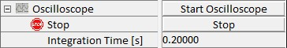

|
示波器
|
示波器序列器允许用户以类似于通过示波器的方式显示测量值。显示的测量值由配置设置。
如果显示单值信号，例如光电倍增管的计数器输出，信号将在设定的时间内积分，然后显示记录的值。当前显示的值将随着每个新值的记录在示波器窗口中向左移动，总显示时间也可调节。如果记录的信号是光谱，CCD 相机将在设定的时间内积分信号，然后使用新光谱刷新整个示波器窗口。示波器参数组中可调整以下参数。

开始示波器
按下此按钮将使用当前参数集开始示波器。
显示时间 [s]
此参数设置示波器窗口中显示的总时间。
积分时间 [s]
此参数设置每个测量点的积分时间。这是光子计数设备的计数时间或记录光谱情况下的积分时间。